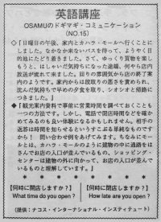

何時に閉店しますか。
Osamu's wife wanted to go to Kahala Mall on a Sunday afternoon. They wanted to take the bus and waited for a long time. Finally, they got on and arrived at the mall. They were happy because they really wanted to go there. Osamu had a cheerful feeling. They started to shop but at that time, there was a announcent that the mall would be closing in a few minutes. They couldn't understand the words but could understand what was happening because all the stores started to close. Osamu's wife started to complain. They ate dinner feeling depressed. Then they returned home feeling unhappy. You should check with sightseeing information about when the stores close. You should call them before you go. The sentence to use is very simple. A mall is an often enclosed area that has many small stores restaurants or businesses. Shopping centers are usually not enclosed. Not all stores close at the same time. Most busineses close around 5. Retail open later till 8 or 9. Around Christmas time, some retail stores will even open till 12 because they want to sell as much as they can. This will usually only happen around the Christmas holidays.
日曜日の午後、家内とカハラ・モールへ行くことにしました。なかなか来ないバスを待って、ようやく目的地にたどり着きました。さて、ゆっくり買物を楽しもうと、はしゃいだ気持ちになった途端、なにやら店内放送が流れてきました。回りの雰囲気から店の終了案内のようです。家内からは段取りの悪さを責められ、沈んだ気持ちで早めの夕食を取り、シオシオと帰路につきました。
観光案内資料で事前に営業時間を調べておくことも一つの方法です。しかし、電話で閉店時間などを確かめてみるのも良い体験になるかもしれません。相手の返答は時間を知らせるというすこぶる単純なものですから！ 問い合わせ例をあげてみます。 ちなみに、モールとは、カハラ・モールのように建物の中に通路をはさんでお店の入り口が並んでいるもの、ショッピング・センターは建物の外に向かって、お店の入り口が並んでいるものと理解しています。
何時に開店しますか。
What time do you open?
何時に閉店しますか。
How late are you open?

| © 1995-2013 NACOS International Institute. All Rights Reserved. |